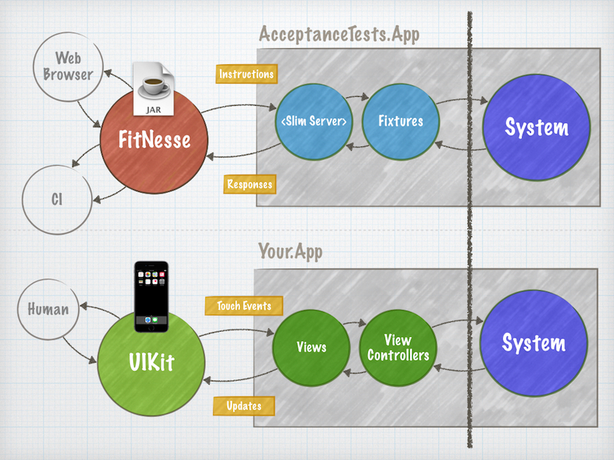

`

OCSlimProject
OCSlimProject is a CocoaPod for iOS and macOS that lets you create fast, rock-solid, automated Acceptance Tests with Xcode and Fitnesse.
Fitnesse is a powerful and fully integrated standalone wiki and acceptance testing framework. It is designed for ATDD and BDD style software development.
Why use Fitnesse?
"FitNesse is a tool for specifying and verifying application acceptance criteria (requirements). It acts as a bridge between the different stakeholders (disciplines) in a software delivery process. It's wiki server makes it easy to document the software.It's test execution capabilities allow you to verify the documentation against the software, ensuring the documentation remains up to date and the software is not facing regression." - Fitnesse User Guide


Usage
To run the example:
- Clone the repo, and run
pod installin the Example directory. - Open OCSlimProject.xcworkspace to see examples of both Mac and iOS Acceptance Tests integrated with a vanilla Xcode project.
Requirements
How it Works
OCSlimProject works by creating a seperate target of your app. This 'Acceptance Tests' target is one that contains your apps business logic code (the 'System Under Test') + simple fixtures .
Fixtures are glue code you write in Swift or Obj-C that provide a thin wrapper around your App's business logic. This is the integration point between your App's code and Fitnesse. Think of Fitnesse as an alternative UI for using your App. As such fixtures (just like View Controllers) should be nothing more than very simple classes that delegate calls to and from your business logic code.
Architecture of an Acceptance Testing App compared with a regular App

Fitnesse communicates with your App using a communications protocol called Slim (Simple List Invocation Method). The work of implementing this protocol is provided via the cslim project which contains an Objective-C implementation written by Erik Myer. When choosing to write fixture with Swift it's required that your fixtures are subclasses of NSObject.
Get Started
OCSlimProject is available to your projects through CocoaPods. It is designed to be integrated through Xcode Templates. These templates encapsulate the work of integrating your App with Fitnesse.
1. Install the Templates
- Download OCSlimProjectXcodeTemplates from GitHub and run make
$ git clone https://github.com/paulstringer/OCSlimProjectXcodeTemplates.git
$ cd OCSlimProjectXcodeTemplates
$ make
This adds the Xcode project templates for creating Acceptance Test targets for iOS & macOS. These are installed at ~/Library/Developer/Xcode/Templates/Test.
-
Navigate to the 'Test' section of Xcode's 'New Target' setup. In both iOS and macOS you will see two new types of testing target:
- Acceptance Tests
This target builds an iOS/macOS Application for Acceptance Testing your App using the Fitnesse framework. Requires a project that uses CocoaPods.
- Acceptance Unit Tests Bundle
This target builds an iOS/macOS unit test bundle that generates results from your Acceptance Tests target using Fitnesse and then reports them within Xcode as XCTest results.
2. Add an 'Acceptance Tests' Targets to your Project
Creating an 'Acceptance Tests' target is the next step. After following this step your ready to begin writing acceptance tests.
Add an 'AcceptanceTests' target to your Project using the 'Acceptance Tests' template. Templates are available for both iOS and macOS. macOS targets run faster, iOS targets allow you to use classes with dependancies on UIKit.
-
Using CocoaPods link OCSlimProject to your 'AcceptanceTests' target with the following Podfile entry
target 'AcceptanceTests' do platform :ios, 9.0 pod 'OCSlimProject' end Run either
pod installorpod updateas necessaryBuild the 'AcceptanceTests' target to generate the App (repeat this after code changes)
Launch Fitnesse by running the script
./LaunchFitnessein your project's root directoryFollow the prompt to download Java 1.8 if needed.
-
Now with Fitnesse running, check out the example and run the tests
Check for any errors in the 'Execution Log' and install Node.js and ios-sim as instructed
3. Develop rock-solid, blazing fast Acceptance Tests!
You're now ready and setup to begin developing rock-solid, blazing fast, automated Acceptance tests for iOS and macOS apps.
For a very basic introduction follow this step by step tutorial introducing writing an example App with Acceptance Tests.
For more in depth tutorials on developing software using BDD and Fitnesse checkout the following Clean Coder video tutorials.
Integration with XCTest
OCSlimProject integrates seamlessly into your development and CI worfklows by supporting XCTest. Run and see reports of your Fitnesse Acceptance Test results right within Xcode or with xcodebuild.
-
Add an 'AcceptanceUnitTests' target to your Project using the 'Acceptance Unit Test Bundle' template*.
The template you initially chose should match the platform of the Acceptance Test target. E.g. if you have an iOS Acceptance Tests app, use the iOS Acceptance Unit Test Bundle
Enter 'OCSlimProjectExamplePage' as the 'Fitnesse Suite Page Name' in the project settings.
-
Edit your Podfile and add the following Podfile entry
target 'AcceptanceUnitTests' do platform :ios, 9.0 pod 'OCSlimProjectTestBundleSupport' end Run
pod updateIMPORTANT Add your 'AcceptanceTests' target as a 'Target Dependancy' of this new target in Build Phases. This ensures that it the latest code has been built prior to the tests being run.
Hit CMD-U and verify your Acceptance Tests run and display the same results seen when running in Fitnesse.
Finally
- Add the 'AcceptanceUnitTest' target to the test phase of any schemes where you want the Acceptance Tests to be run as part of your develop and test workflow. E.g. Add 'AcceptanceUnitTest' to the test phase of your main apps target. This will then run acceptance tests at the same time as running your regular unit tests.
Known Xcode 8 / CI Integration Issue
Due to an abnormally long delay in starting a simulator from a fresh image of Xcode 8 there is a known issue when integrating with CI systems such as Travis. (It can be assumed this likely affects other CI systems that use fresh VM images for each integration.)
** CI System Script **
xcodebuild -workspace <Workspace> -scheme <AcceptanceUnitTestBundleScheme> -destination 'platform=iOS Simulator,name=iPhone 6s' test
** TEST FAILED **
The command "set -o pipefail && xcodebuild -workspace <Workspace> -scheme <AcceptanceUnitTestBundleScheme> -destination 'platform=iOS Simulator,name=iPhone 6s' test" exited with 65.
The error reveals itself as a failure when attempting to run only an iOS based 'Acceptance Unit Test Bundles' as seen in this example. Inconclusive investigations seem to point to it being the result of XCTest timing out waiting for the Build Phase responsible for generating the Fitnesse Test Results. This itself is dependant on starting the Simulator. This never completes for some unknown reason.
Workaround
A workaround is simply to run some other Unit Tests first before running your scheme. Typically this will involve just ensuring your actual Unit Tests have been run first. This seems to prepare the Simulator so that when Fitnesse comes to need it, it's ready.
Check out the Travis Configuration of this project for an example.
Acknowledgements
The owner of this repository takes no credit for the following included resources (except for the ones credited to the owner). This is a convienient lightweight wrapper either inspired by or using these resources together with some project glue. The aim has been to automate the process of setting up Xcode projects so as to more easily be able to use 'ocslim' and integrate with Fitnesse.
Fitnesse
Created by: Robert Martin, Micah Martin & Fitnesse.org contributors.
OCSlim, RunTestsTargetWithSlimPort
Created by: Erik Meyer, Doug Bradbury, 8th Light.
https://github.com/ericmeyer/ObjectiveCSlim
https://github.com/dougbradbury/cslim/tree/ocslim
ios-sim
Created by: Phonegap
https://github.com/phonegap/ios-sim
exportenv.sh
Created by: Jon Reid
https://github.com/jonreid/XcodeCoverage
Xcode Project Templates, OCSlimProjectTestBundleSupport, LaunchFitnesse
Created by: Paul Stringer
https://github.com/paulstringer/OCSlimProject
License
OCSlimProject is available under the MIT license. See the LICENSE file for more info.